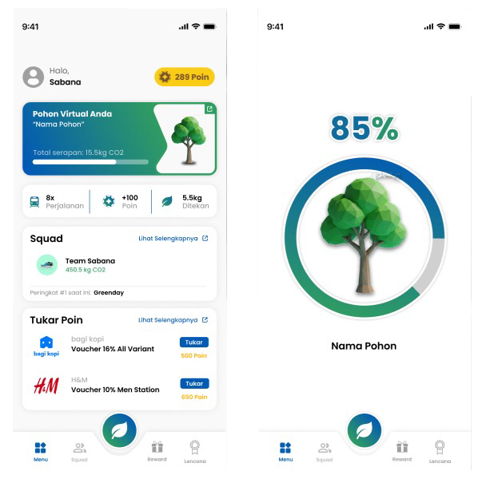

Pernah kepikiran nggak tiap kali kita naik kendaraan bermotor di Jakarta, kita tanpa sadar ikut nyumbang polusi yang bikin langit kota makin abu-abu? Padahal, ada opsi untuk naik transportasi umum kayak MRT yang jelas-jelas lebih ramah lingkungan. Sayangnya, kadang kita malas pindah ke transportasi umum karena merasa kontribusi kita itu "nggak kelihatan" dampaknya.
Dari keresahan ini, aku dan tim mencoba merancang sebuah solusi bernama HiJak (Jejak Karbon). Idenya simpel: gimana caranya mengubah rutinitas naik MRT jadi sesuatu yang seru dan kerasa banget dampaknya buat lingkungan. Daripada bikin aplikasi baru yang ujung-ujungnya jarang dibuka pengguna, HiJak ini dirancang untuk terintegrasi langsung di dalam aplikasi MRT Jakarta yang sudah ada.
Bayangin aja, pas kamu turun dari MRT, tiba-tiba ada notifikasi lucu muncul: "Terima kasih! Perjalanan Anda hari ini telah membantu menyelamatkan 1 pohon virtual". Rasanya pasti lebih rewarding, kan? Biar penggunanya makin semangat, kami juga merancang UI/UX untuk fitur gamifikasi. Jadi, pengguna bisa ngumpulin badge digital dan poin loyalitas buat ditukar dengan berbagai reward menarik.
Pada akhirnya, HiJak bukan sekadar fitur pelacak emisi biasa. Ini adalah cara baru untuk ngehubungin rutinitas harian warga kota sama kepedulian lingkungan. Harapannya, dengan ngeliat langsung 'pohon' yang berhasil diselamatkan dari tiap perjalanan, orang-orang jadi lebih termotivasi buat terus beralih ke transportasi umum dan bareng-bareng ngedukung gerakan #UbahJakarta.